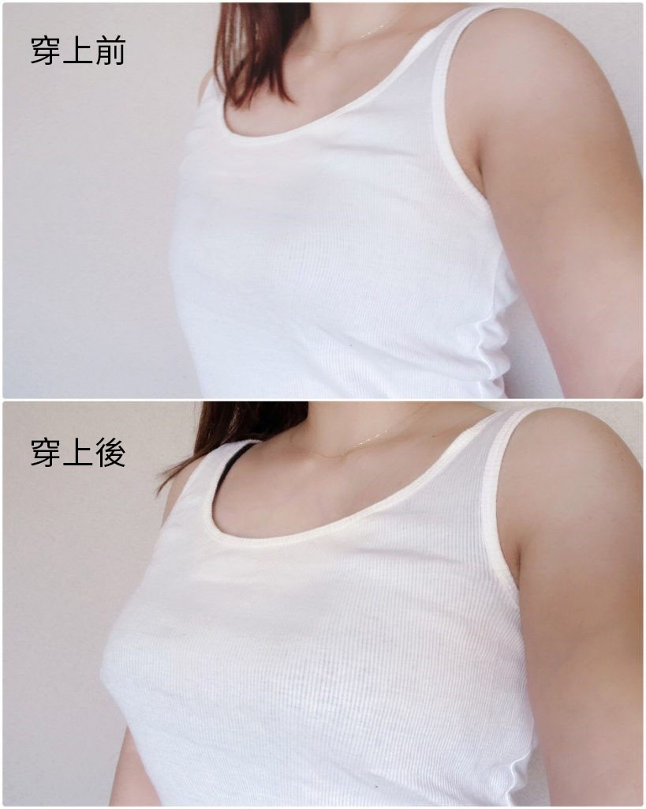
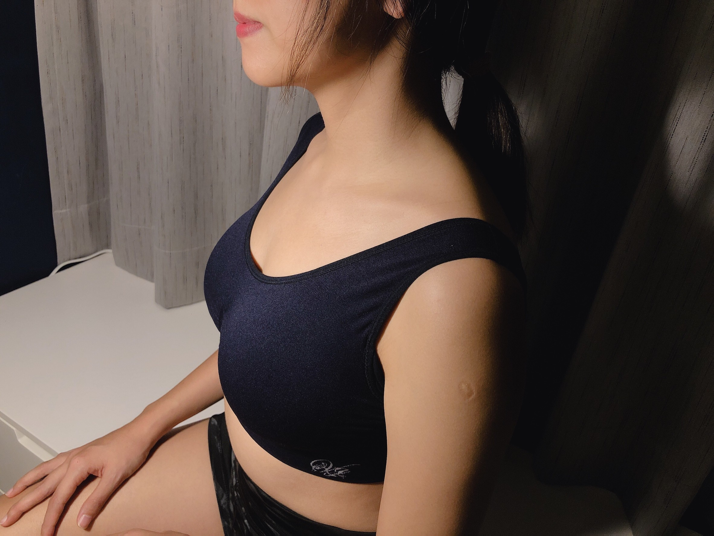
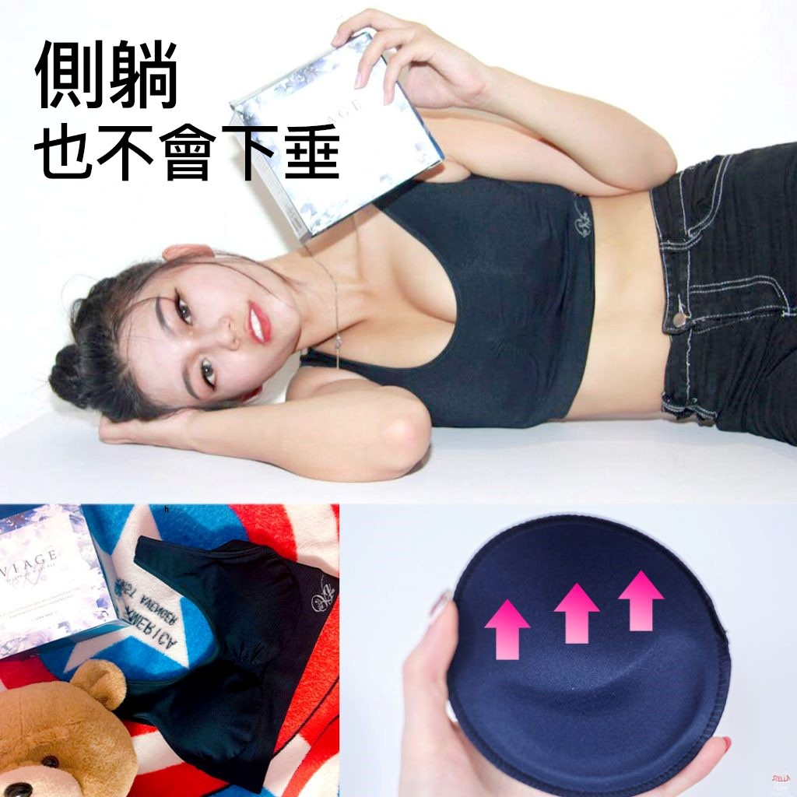
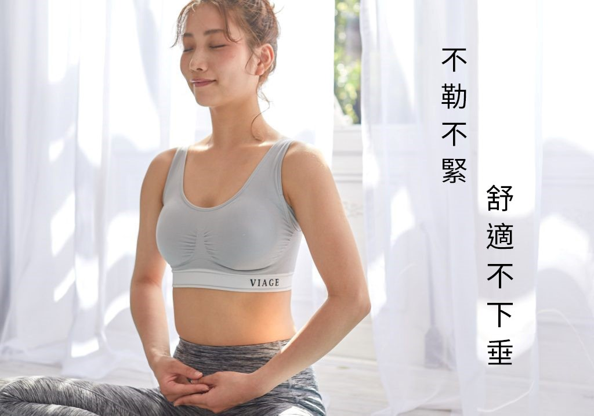
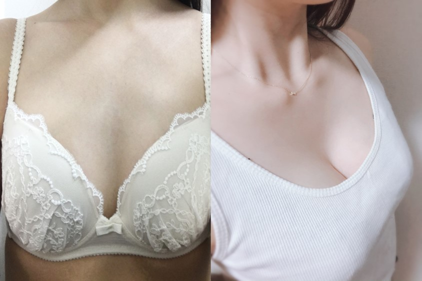
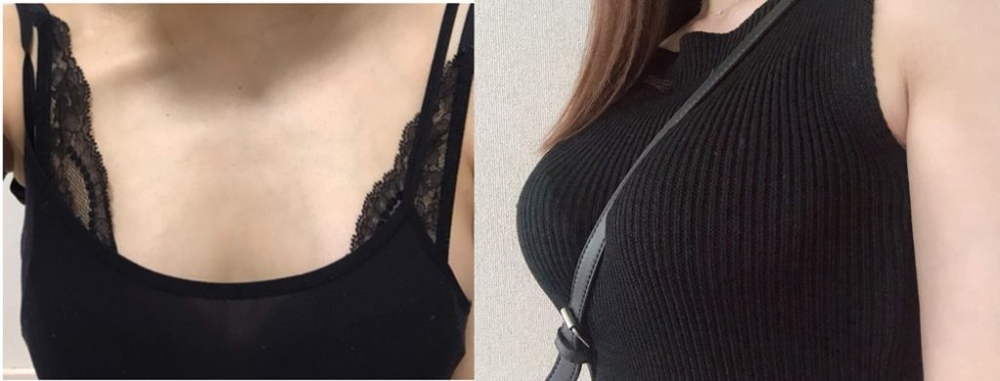
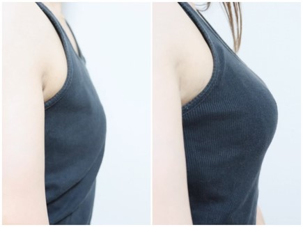
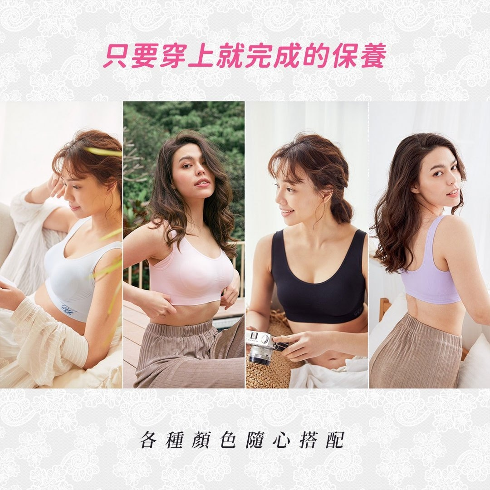

日本女孩保養術
你無法想象現在胸部立挺的我，曾經也有貧乳且下垂嚴重的時候。。。
我一直很認真穿鋼圈內衣，希望胸部可以大點，畢竟平胸穿什麼都不好看！
某天我照鏡子發現，我的胸部不只沒大，還下垂了！就算穿鋼圈內衣也下垂！
我發現一個主因:
一回家，我就因為穿鋼圈內衣很憋，會把內衣脫掉。穿著睡衣跑來跑去…沒想到就是在家裡晃動的時間就會導致下垂…
好想恢復胸型怎麼辦？
胸部下垂除了不好看，也會覺得胸部變小了，看來也會變老。為了恢復胸型，我上網找了很多方法，也做了一些胸部的健身、按摩？但我覺得很無感！
沒想到的最簡單的方法：回到最初的起點，穿件能穿整天的內衣！

看見了嗎？穿上瞬間胸部立挺了，胸部就大了！就是穿件內衣這麼簡單，但是買到這樣的內衣不太簡單！
＊到底穿什麼內衣？有些迷思，想解惑！＊
1. 穿內衣睡覺對女生不好?
→穿鋼圈內衣睡覺對女生不好，會壓迫淋巴，無鋼圈內衣沒有這個問題!!
2. 隨意無鋼圈內衣都有用?
如果不在意胸型的女性，但要你要像我一樣，從下垂變回立挺的話，就要穿對內衣！穿對內衣！穿對內衣！說三遍。
Viage美胸內衣，
就是那件對的內衣！對的內衣！

這件日本進口的Viage晚安內衣，專為胸部下垂的女性設計的。有幾個特點:

而且無鋼圈、布料很親膚、彈性也十分足夠。沒有無用的設計，只有滿分實力。

大家都說………………..!!!!
穿晚安內衣後，胸型回到原本的位置，下垂煩惱out。
看看大家的心得分享吧！

台北王小姐
雖然它叫晚安內衣，但我幾乎整天都穿著，晚上穿白天穿，舒服到脫不下來，大約穿了快一個月後，
某天洗完澡照鏡子突然發現
自己的因為哺乳下垂的胸部恢復產前的立挺胸型了

新莊張小姐
我穿了各種塑型內衣，勒的我很不舒服，但胸型都沒恢復。viage的內衣穿了一個月，胸部真的回到屬於它的位置！
真的讓我太感動了～讓我找回20幾歲的自信。

高雄黃小姐
穿了viage晚安內衣才知道原來內衣可以這麼好穿~viage彈性，親膚布料，在熱死人的高雄穿也很舒服，調整胸型不用停下來！
胸部下垂救星–Viage晚安內衣

大家千萬不要仗著自己胸型漂亮
就忽略了晚上的胸部保養
胸部保養不分年齡，越早開始越好，也不是每個人能像我這麼幸運，下垂後還能立挺回來，
現在不注意
【胸部下垂】【布袋奶】馬上找上妳唷!!
分享給有下垂困擾的水水
真心建議可以穿穿看哦！
而且網路上就買得到很方便～
團購多件還有超值優惠！